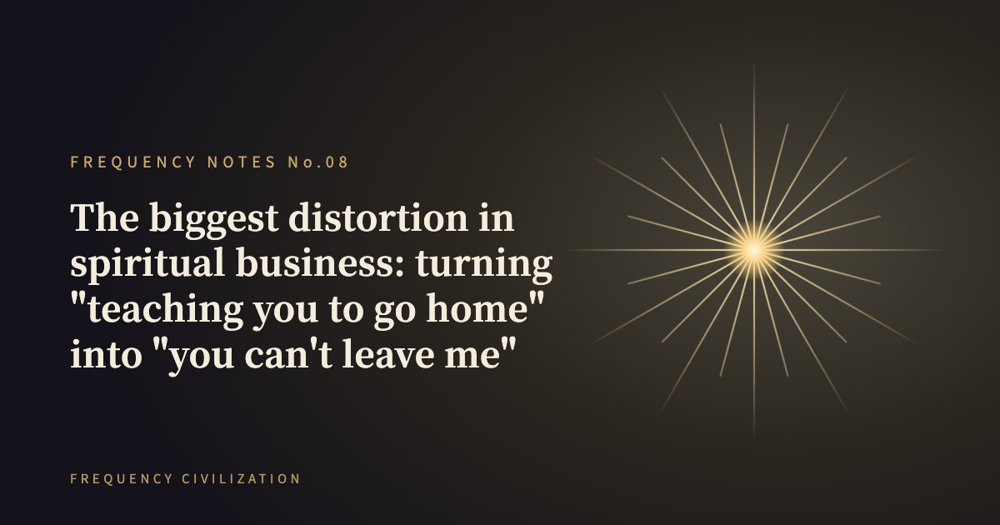

Frequency Notes・No.08
The biggest distortion in spiritual business: turning "teaching you to go home" into "you can't leave me"

What should be a bridge to awakening becomes a sect people cling to.
Real frequency education
makes you clearer, freer, and less and less in need of me.
Originally posted on Threads by @freq_civilization, September 7, 2025. Translated from Chinese. Read the original (in Chinese) →
Want to understand how you operate? Take the full test, about 13 minutes →